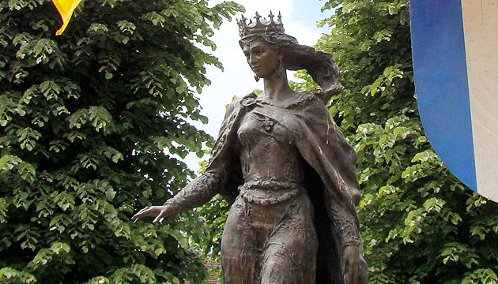
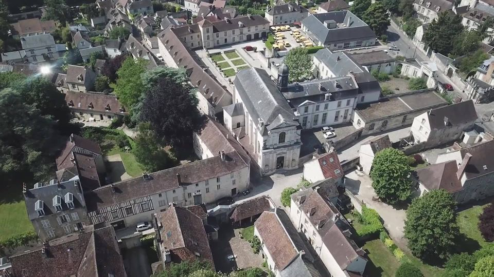

П’ять літ минуло з часу як у вересні, 2013 року українська греко-католицька Єпархія святого Володимира в Парижі з єпископом Борисом Гудзяком, придбала церкву в Санлісі поpяд із Абатством святого Вікентія. З листопада 2013 відкрились двері церква УГКЦ страстотерпців Бориса і Гліба. При храмі діє культурний центр Анни Ярославни.
У травні французи і українці збираються в Санлісі на святкування масштабної культурної та історичної події - днів Анни Ярославни.
Загадкова українська Анна
Анна Київська - королева Франції, донька Ярослава Мудрого, онука Володимира Великого, племінниця українських святих Бориса і Гліба.
Анна Ярославна - українська княгиня із Києва, найрозвиненішої столиці Європи в ХІ столітті. Анна - одна з найвидатніших жінок середньовіччя, що прославила Україну на всю Європу. Перша офіційно зафіксована з України емігрантка до Європи. Єдина жінка, котра вела переписку з Папою Римським Миколою ІІ.
У 1051 році Анна Ярославна одружилася з французьким монархом Генріхом І і стала королевою Франції. Київська княжна привезла до французької столиці давньоруське Євангеліє, написане кирилицею та глаголицею. Згодом Євангеліє передали до Реймського собору назвавши Реймським. Саме на ньому усі королі Франції до XVIII ст., вступаючи на престол, давали клятву під час коронації на вірність Франції. Нині цей безцінний документ епохи раннього середньовіччя зберігається в Національній бібліотеці у Парижі.
Санліс - місто з українським корінням
Після смерті короля Генріха І, Анна обрала місто Санліс - столицю і резиденцію французьких королів. Місто розташоване на пагорбі між двома річками Онет і Нонет, за 45 км від Парижа. В стародавні часи місцевість, після розливу річок, ставала непрохідним болотом. Довелось докласти зусиль на розбудову міста.
Санліс процвітав до 14 століття. Торгівля, ремісництво і виноградарство приносили прибуток. Із Санлісу Анна, як дружина покійного короля, і мати неповнолітнього сина, котрий не міг зайняти престол, правила Францією. Тут прожила життя, виховала трьох синів:Філіпа, Робера та Гуго, тут творила історію, плекала релігію. У 1060 році королева Анна заснувала абатство святого Венсана, монастир святого Вікентія.
Майже століття церква не діяла як храм, перебуваючи у приватній власності. Але французька громада Санліса не переставала молитись біля могили Анни Ярославни.
У 2005 Україна подарувала французькому Санлісу пам’ятник Анни Ярославни, створений скульптором В. І. Зноба за ледь відомими фактами про доньку Ярослава Мудрого. Кажуть, вона була вродливою. Довге русяве волосся, блакитні очі. А ще Анна була освіченою. Знала грецьку і латину. Підписувалася як Анна Регіна (королева Анна), у той час коли король Генріх I замість підпису ставив хрестик.
Анна Київська започаткувала франко-українські відносини. Наша роль – їх розвивати. Ярослав Мудрий стояв біля витоків Європи, і ми хочемо, щоб європейці знали про це. Знали, що Україна існує понад тисячу років, як цивілізація, як культура, як духовність, що сучасні українці поділяють загальноєвропейські цінності. Поки українцям ще не повною мірою вистачає впевненості в собі, поки ще важко відстоювати власну гідність і європейську ідентичність – дочка Ярослава Мудрого ніби закликає нас пригадати про неї, про її історію, відчути цю європейську ДНК, яку закладено в нас, та усвідомити, що від українця до француза насправді дуже близько.” (Вікторія Делленжер), співзасновниця Культурного центру Анни Київської у місті Санліс, Франція.
Цікаві факти
- Урочиста коронація Філіпа I, сина Анни, відбулася у 1066 році, коли йому виповнилось чотирнадцять. Згодом Філіп І одружився з Бертою Фрайзінгенською і Франція отримала нову першу даму. Анна залишила державні справи.
- Востаннє ім’я Анни Ярославни засвідчене на документі 1075 року. Що сталося з нею потім невідомо. Наприкінці XVII ст. вчений абат Менетріє знайшов могилу Анни в церкві Вільєрського абатства, поблизу міста Етамп у Франції. Латинський напис на гробниці мовить: «Hic jacet Domina Agnes uxor quondam Henrici Regis, Eorum per miſericordiam Dei requiſcant in pace» (тут лежить пані Анна, вдова короля Генріха).
Так закінчилась малодосліджена історія життя київської княжни Анни. В історії Франції вона назавжди залишиться як прабабця майже 30 французьких королів! Наявність українських генів у крові французьких королів прослідковується до 1848 року.
Окрім синів у Анна Ярославни була донька, Едгіна. Втікши з дому вона шукала рідну землю - Київську Русь а ще понад усе хотіла здійснити паломництво на Святу Землю. Дорогою Едгіні наснився сон, що вона залишиться там, де одночасно задзвонить дзвін і закричить півень. Це сталося у с. Пух, неподалік Мюнхена. Там, у дуплі старої липи, дівчина прожила як черниця понад 30 років. За це канонізована як блаженна римо-католицької та греко-католицької церков.
У 2010 році Антонін Ладінский видав книгу “Анна Ярославна”.
Книжка Наталії Крутенко “Анна Ярославна” - перше ґрунтовне дослідження життя Анни. Книжка проілюстрована творами образотворчого мистецтва, серед яких чимало раритетних, зокрема мініатюра з «Великих Французьких Хронік» із зображенням Анни Ярославни у колі сім'ї, 1460 року. Подано авторську атрибуцію графічних портретів королеви досі не відомого авторства європейських митців XVII-XIX ст.
Відродження
Майже через тисячу років, у нашому сьогоденні, будівля у Франції стала місцем, де відродилася українська спадщина. Церква святих Бориса і Гліба та Культурний центр Анни Київської наповнили висохле джерело молитвами, традиціями, піснями української нації. Основна мета центру - примножити і показати світові Україну крізь призму століть. Поєднуючи минуле та сучасне, об’єднавши довкола благородної мети імена відомих українців та усіх небайдужих, розповісти, що українці не просто за фізичною картою у Європі, а справді є давньою європейською нацією.
“Культурний Центр Анни Київської існує у Франції як важливе нагадування, що Україна стала частиною Європи ще тисячу років тому. Сьогодні, коли за свою історію Україна має боротися, надзвичайно важливо зберегти ці осередки українства на території Європи та сприяти їх розвитку. Ми би хотіли, щоб український голос звучав у вирішальних питаннях в Європі. Таким голосом промовляла королева Анна. Владика Борис (Ґудзяк)
Культурний центр Анни Київської у Франції працює як платформа у напрямках культури та освіти. Тут цікавляться політикою, релігією, літературою, мистецтвом, музикою, модою, українськими стравами. До усіх справ активно залучають молодь. Тут кожен має шанс голосно промовити слово про Україну. І це не лише повернення з минулого, це міцний корінь, що пустив молоді паростки для майбутнього.